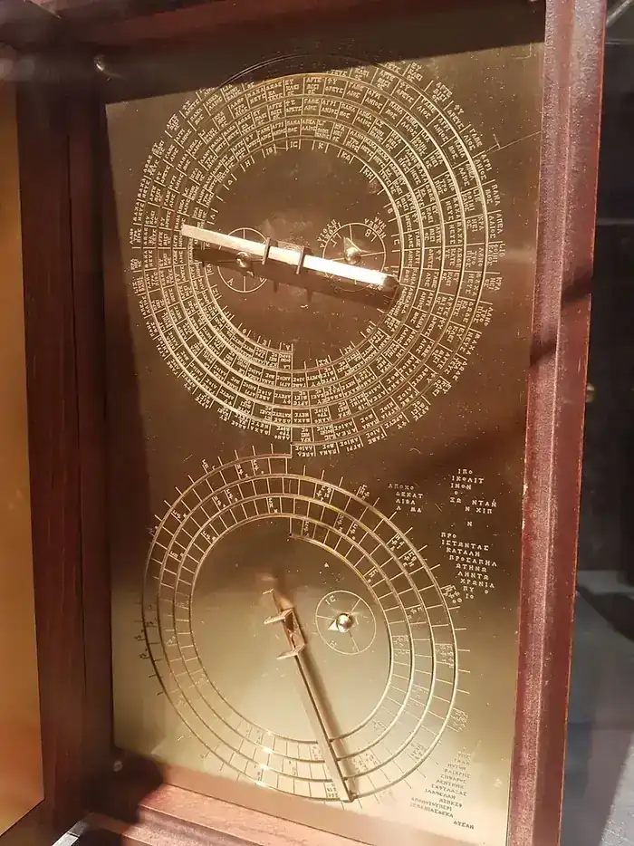
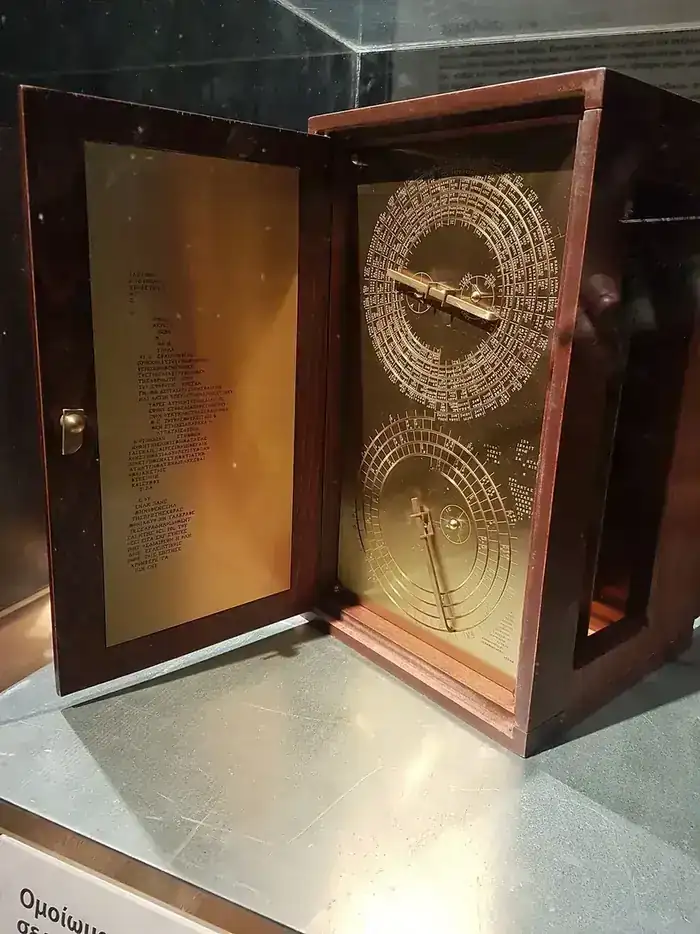
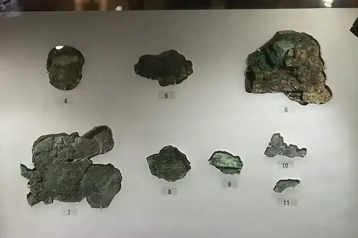

The object
The Antikythera mechanism was recovered in 1901 from a shipwreck near the Greek island of Antikythera, dated to around the second century BC. It is a bronze geared device with at least thirty surviving gears, enclosed in a wooden case with dials, and it was used to model the positions of the sun and moon, the phases of the moon, and — according to recent reconstructions — the planets.
Maps, diagrams and images






The research
X-ray and CT imaging since the 1970s has revealed the gear trains and the inscriptions, which act as a manual. The mechanism also includes a pin-and-slot device reproducing the moon's variable motion, and a dial for predicting eclipses. It is the most complex known object of its kind from antiquity.
The absence of anything similar for a millennium is a genuine puzzle about transmission, not evidence of anything exotic.
Documented: the object, its gears and its inscriptions.
Documented: its function as an astronomical model.
Documented: the eclipse prediction dial.
Contested: some details of the planetary display.
The label: documented.
Why it is in the archive
Because it is the strongest evidence that ancient technology could be extraordinary, and because it needs no myth to be astonishing.
Open resources on this topic
- BookA Portable Cosmos: Revealing the Antikythera Mechanism, Scientific Wonder of the Ancient World — Alexander Jones · 2017 (Internet Archive, free to read)
- BookScientific Report The Antikythera Mechanism — Zachery Claude Maarschalkerweerd Jones · 2025 (Internet Archive, free to read)
- BookEclipse Prediction on the Ancient Greek Astronomical Calculating Machine Known as the Antikythera Mechanism. — Freeth, Tony · 2014 (Internet Archive, free to read)
- PapersOpen-access articles: DOAJ · PubMed Central · Internet Archive Scholar
- BooksPublic-domain and borrowable copies: Open Library · Project Gutenberg · Google Books
Cite this page
Momin, S. (2026). The Antikythera Mechanism. The Larger World Archive. https://drsamonline.github.io/LARGE_GLOBE/antikythera-mechanism.htmlMomin, Sohil. “The Antikythera Mechanism.” The Larger World Archive, 2026, https://drsamonline.github.io/LARGE_GLOBE/antikythera-mechanism.html.Momin, Sohil. “The Antikythera Mechanism.” The Larger World Archive, 2026. https://drsamonline.github.io/LARGE_GLOBE/antikythera-mechanism.html.@misc{the2026antikythera,
author = {Momin, Sohil},
title = {The Antikythera Mechanism},
year = {2026},
howpublished = {The Larger World Archive},
url = {https://drsamonline.github.io/LARGE_GLOBE/antikythera-mechanism.html},
note = {Last reviewed 20 November 2026}
}Last reviewed 20 November 2026 · Corrections policy · this page is not peer reviewed
Sources for this page
- Wikipedia, “Antikythera mechanism” — the object and the researchen.wikipedia.org
- Wikipedia, “Antikythera shipwreck” — the contexten.wikipedia.org
- Wikipedia, “Gear” — the technologyen.wikipedia.org
- Wikipedia, “Astronomical clock” — the later traditionen.wikipedia.org